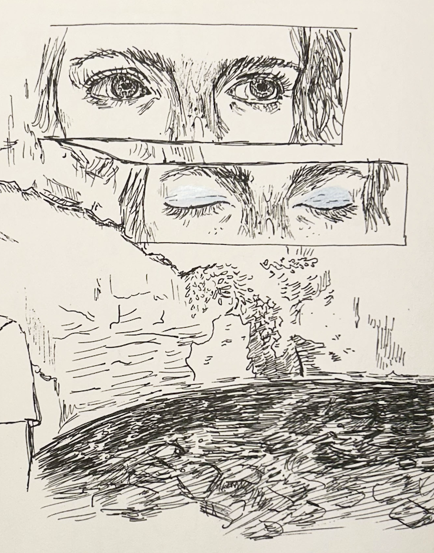

My name is Alice! I am a graduating senior in high school. I like spending time outdoors, hanging out with friends, reading, and making art. This portfolio showcases my Computer Science work and journey of growth. I have grown in my CS knowledge and skills by learning how to build creative projects digitally. My favorite part of the class has been exploring my interests through the assignments, such as coding an image about rollerskating or making a quiz inspired by a show I like. When this class started, I had little to no coding experience. I’ve learned how to apply CS concepts in fun ways and create complex lines of code. I’ve also learned the importance of revision and trial-and-error in computer science, which was a good lesson on perseverance in general. I’m excited to apply computer science to new projects in the future!